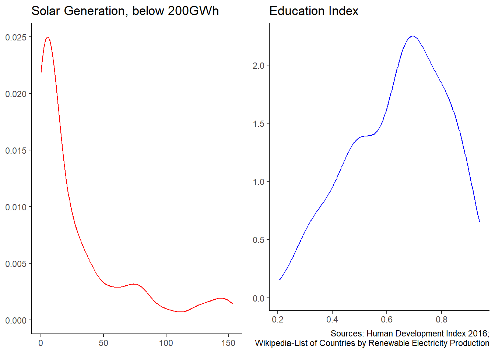
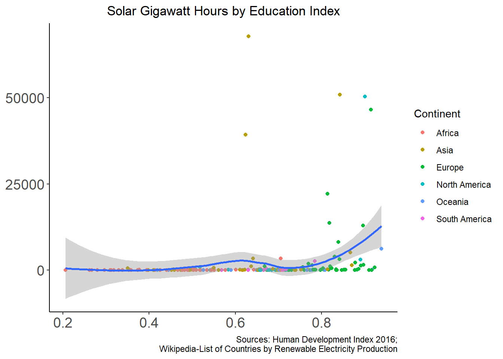
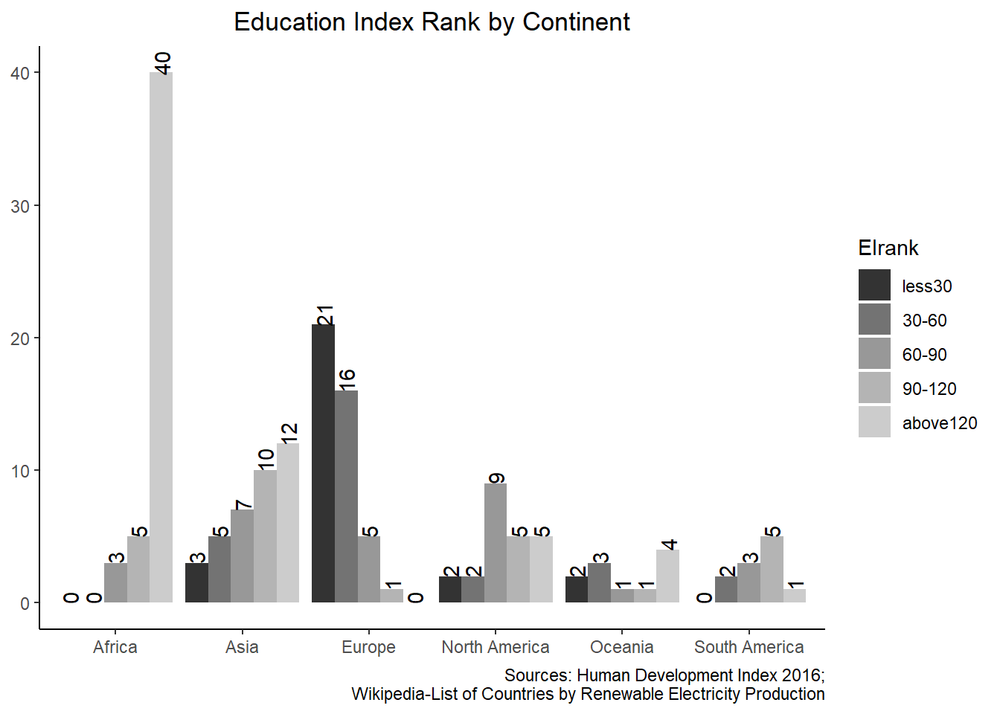
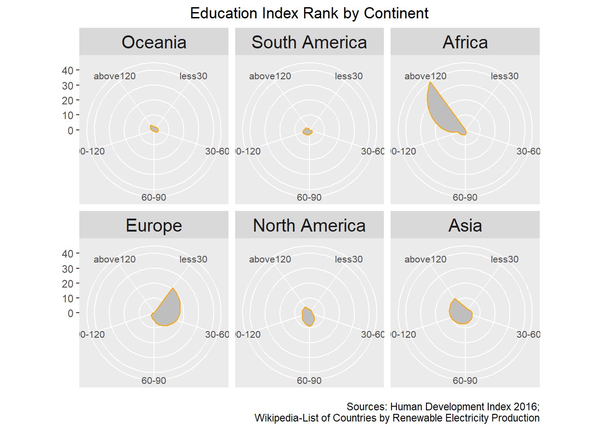
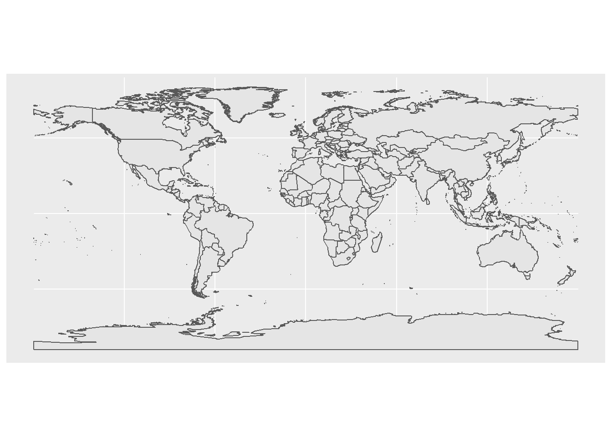
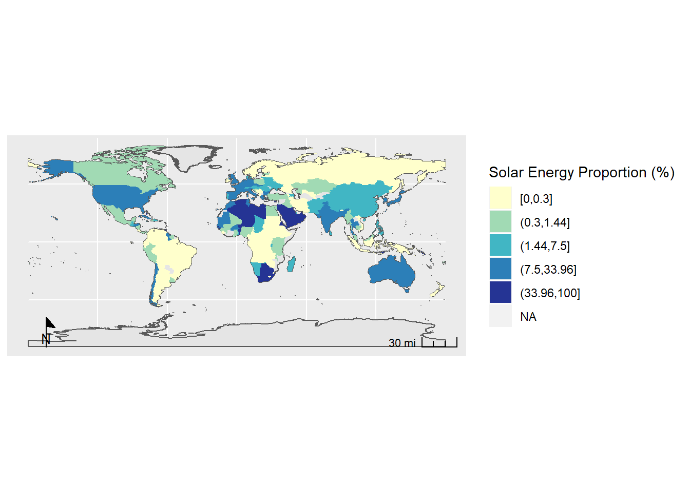
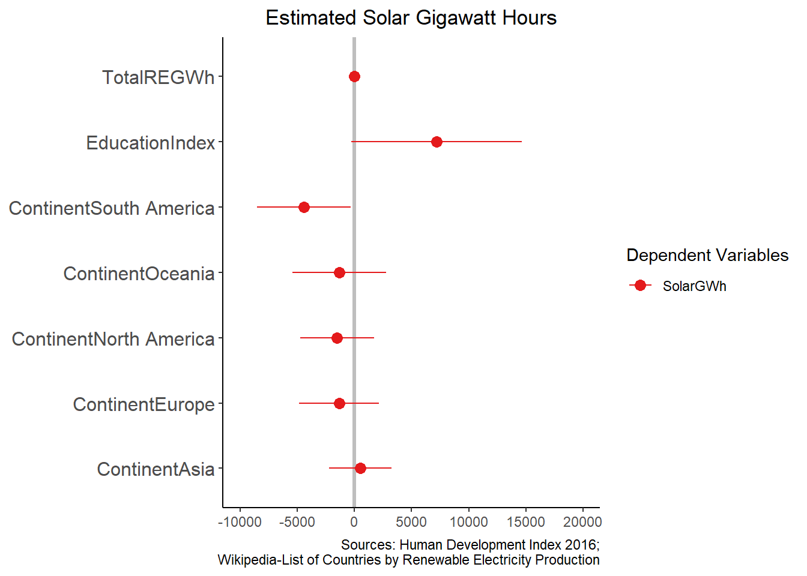
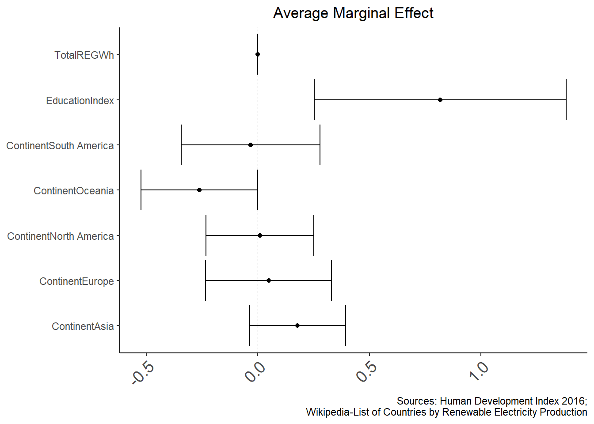

Final Report (PUBPOL 543)
Updated 2020-03-17
1 Education and Renewable Energy
1.1 Hypothesis
Countries that have higher scores on the Education Index install higher proportions of renewable energy, such as solar power.
1.2 Data Sources
Education Index by 2015 Country Data, released in the 2016 Human Development Report. Available at: https://en.wikipedia.org/wiki/Education_Index.
List of Countries by Renewable Electricity Production. Available at: https://en.wikipedia.org/wiki/List_of_countries_by_renewable_electricity_production.
1.3 Data Visualization
1.3.1 UNIVARIATE
There are two variables we are interested in: Education Index and Solar Generation. Each variable was plotted.

1.3.2 BIVARIATE
1.3.2.1 Solar Generation - Education Index
Both variabels were plotted in the bivariate way to see the relationship. It is found that only if Education Index is higher than 0.8, the suggested hypothesis that countries that have higher scores on the Education Index install higher proportions of renewable energy, such as solar power, seems right.

1.3.2.2 Education Index Rank - Continent (Bar plot)
Furthermore, Education Index Rank was plotted per continent using bar and radar plots.

1.3.2.3 Education Index Rank - Continent (Radar plot)

1.3.3 Mapping
Solar Energy Proportion and Education Index were mapped.
1.3.4 Background Map

1.3.4.1 Solar Energy Portion (%)

1.3.4.2 Education Index (Interactive map)
1.4 Regression
1.4.1 Hypothesis
Countries that have higher scores on the Education Index install higher proportions of solar power.
Finally, to find the relationship between Education Index and Solar generation, two regression models were performed: Gaussian and binomial regressions with a control variable, Continent.
Gaussian Regression: Solar ~ Total RE + Education Index + Continent

Logistic Regression: Solar (0,1) ~ Total RE + Education Index + Continent

Our data shows counties with higher Education Index are mostly in Europe while with lower Education Index are in Africa. Furthermore, our analyses found that Education Index is correlated to solar generation meaning countries with higher Education Index are more likely to have higher solar generation. There was not much difference between Gaussian and binomial regression models for the result.